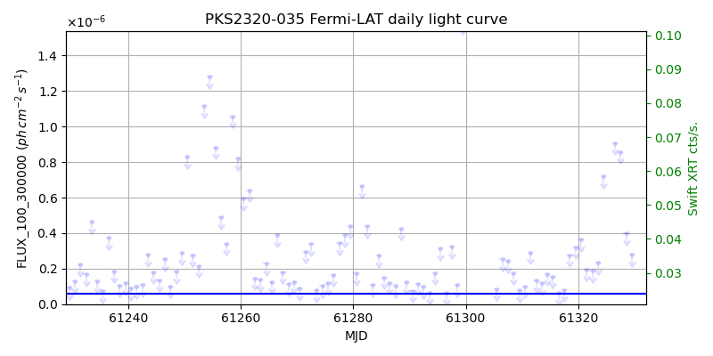
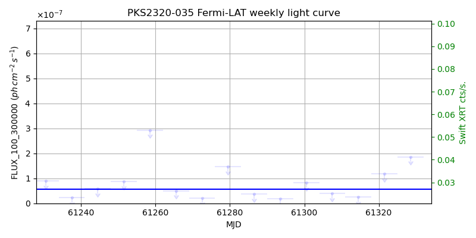
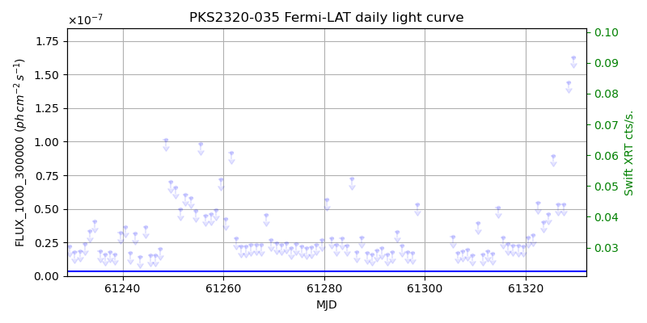
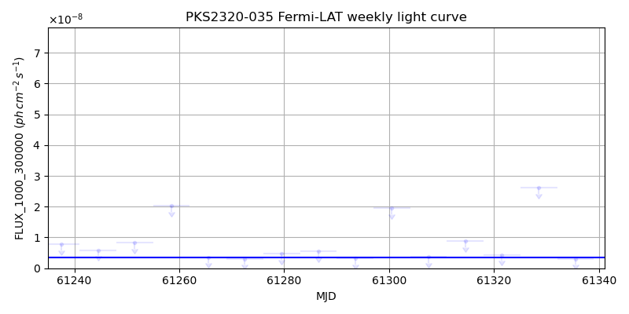

LAT Lightcurve site: https://fermi.gsfc.nasa.gov/ssc/data/access/lat/msl_lc/source/PKS_2320-035
NED: Query
Time of last update of this page: UT: 2026-10-30 15:30 (MJD: 61343.646)
| Property | Value |
|---|---|
| R.A. | 23:23:31.92 |
| Dec. | -3:17:06.0 |
| z | 1.411 |
| 3FGL SpectrumType | LogParabola |
| 3FGL PL Index | |
| 3FGL Flux_100_300000 | 5.67e-08 1 / (s cm2) |
| 3FGL Flux_1000_300000 | 3.56e-09 1 / (s cm2) |
| 3FGL Flux >200 GeV | 9.86e-13 1 / (s cm2) |
| 3FGL Extrap. Crab >200 GeV | 0.00 |
| 3FGL Flux After EBL Absorption >200GeV | 3.26e-15 1 / (s cm2) |
| 3FGL EBL Crab Fraction >200GeV | 0.00 |

| MJD | dMJD | Flux | dFlux | Frac3FGL | FracCrab>200GeV | EBLFracCrab>200GeV |
|---|---|---|---|---|---|---|
| 61338.50 | 0.50 | 1.36e-07 | 0.00e+00 | 0.00 | 0.00 | 0.00 |
| 61339.50 | 0.50 | 5.03e-07 | 0.00e+00 | 0.00 | 0.00 | 0.00 |
| 61340.50 | 0.50 | 8.18e-08 | 0.00e+00 | 0.00 | 0.00 | 0.00 |
| 61341.50 | 0.50 | 2.46e-07 | 0.00e+00 | 0.00 | 0.00 | 0.00 |
| 61342.50 | 0.50 | 1.52e-07 | 0.00e+00 | 0.00 | 0.00 | 0.00 |

| MJD | dMJD | Flux | dFlux | Frac3FGL | FracCrab>200GeV | EBLFracCrab>200GeV |
|---|---|---|---|---|---|---|
| 61307.50 | 3.50 | 3.92e-08 | 0.00e+00 | 0.00 | 0.00 | 0.00 |
| 61314.50 | 3.50 | 2.55e-08 | 0.00e+00 | 0.00 | 0.00 | 0.00 |
| 61321.50 | 3.50 | 1.18e-07 | 0.00e+00 | 0.00 | 0.00 | 0.00 |
| 61328.50 | 3.50 | 1.85e-07 | 0.00e+00 | 0.00 | 0.00 | 0.00 |
| 61335.50 | 3.50 | 4.71e-08 | 0.00e+00 | 0.00 | 0.00 | 0.00 |

| MJD | dMJD | Flux | dFlux | Frac3FGL | FracCrab>200GeV | EBLFracCrab>200GeV |
|---|---|---|---|---|---|---|
| 61338.50 | 0.50 | 1.84e-08 | 0.00e+00 | 0.00 | 0.00 | 0.00 |
| 61339.50 | 0.50 | 1.71e-08 | 0.00e+00 | 0.00 | 0.00 | 0.00 |
| 61340.50 | 0.50 | 1.67e-08 | 0.00e+00 | 0.00 | 0.00 | 0.00 |
| 61341.50 | 0.50 | 1.72e-08 | 0.00e+00 | 0.00 | 0.00 | 0.00 |
| 61342.50 | 0.50 | 1.90e-08 | 0.00e+00 | 0.00 | 0.00 | 0.00 |

| MJD | dMJD | Flux | dFlux | Frac3FGL | FracCrab>200GeV | EBLFracCrab>200GeV |
|---|---|---|---|---|---|---|
| 61307.50 | 3.50 | 3.78e-09 | 0.00e+00 | 0.00 | 0.00 | 0.00 |
| 61314.50 | 3.50 | 8.86e-09 | 0.00e+00 | 0.00 | 0.00 | 0.00 |
| 61321.50 | 3.50 | 4.39e-09 | 0.00e+00 | 0.00 | 0.00 | 0.00 |
| 61328.50 | 3.50 | 2.61e-08 | 0.00e+00 | 0.00 | 0.00 | 0.00 |
| 61335.50 | 3.50 | 3.04e-09 | 0.00e+00 | 0.00 | 0.00 | 0.00 |
--------------------------------------------------------- Using user-supplied coords: 23:23:31.92 -3:17:06.0 2000 --------------------------------------------------------- FLWO UT night of: 2026-10-31 Local Sid. @ Midnight: 02:14 Sunset (-15.0) (local, UT): 18:44 01:44 Sunrise (-15.0) (local, UT): 05:31 12:31 Moonrise (local, UT): 21:49 04:49 Moonset (local, UT): Moon phase: 0.68 --------------------------------------------------------- AzTime LSID UT Obj_el Obj_az Mn_el Mn_az Sep. --------------------------------------------------------- 18:44 20:57 01:44 40.7 127.9 -27.0 28.6 114.0 19:14 21:27 02:14 45.5 135.9 -23.9 34.8 114.4 19:44 21:57 02:44 49.5 145.3 -20.2 40.4 114.7 20:14 22:27 03:14 52.7 156.1 -16.1 45.6 115.1 20:44 22:58 03:44 54.6 168.4 -11.6 50.4 115.5 21:14 23:28 04:14 55.2 181.4 -6.7 54.8 115.8 21:44 23:58 04:44 54.3 194.3 -0.9 58.8 116.1 22:14 00:28 05:14 52.1 206.3 3.8 62.5 116.5 22:44 00:58 05:44 48.7 216.9 9.2 66.0 116.8 23:14 01:28 06:14 44.5 225.9 14.8 69.3 117.1 23:44 01:58 06:44 39.6 233.6 20.6 72.5 117.3 00:14 02:28 07:14 34.2 240.2 26.5 75.5 117.6 00:44 02:58 07:44 28.5 245.9 32.5 78.6 117.9 01:14 03:28 08:14 22.6 251.0 38.5 81.7 118.1 01:44 03:58 08:44 16.5 255.6 44.7 84.9 118.3 02:14 04:28 09:14 10.3 259.9 50.8 88.3 118.6 02:44 04:59 09:44 4.0 263.9 57.0 92.2 118.8 03:14 05:29 10:14 -1.5 267.9 63.2 97.0 119.0 03:44 05:59 10:44 -8.9 271.8 69.3 103.5 119.2 04:14 06:29 11:14 -15.3 275.9 75.2 113.7 119.4 04:44 06:59 11:44 -21.7 280.1 80.4 133.8 119.6 05:14 07:29 12:14 -27.9 284.7 83.0 177.6 119.7 05:31 07:46 12:31 -31.4 287.6 82.2 206.9 119.9 --------------------------------------------------------- Dark hours >55 deg.: 0.52 srcstart (UT): 2026-10-31 03:55 srcend (UT): 2026-10-31 04:26